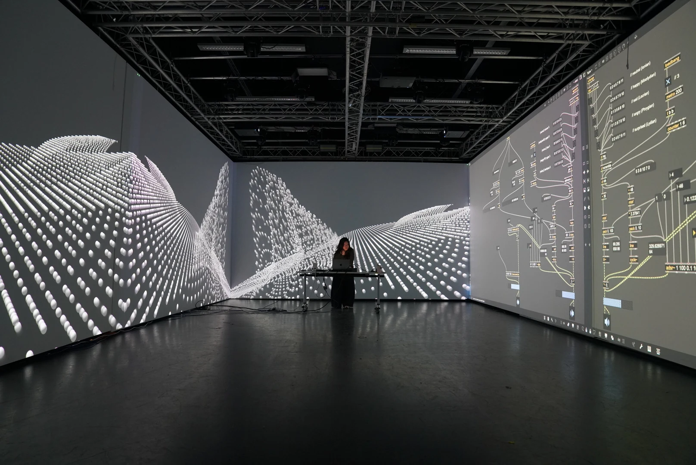

Read My Face Out Loud, And We Resonate
What do we face most often by showing our faces? Mobile phones, laptops, and other camera-equipped devices collect vast amounts of information in daily life, while human emotions are increasingly inferred through facial expressions. Read My Face Out Loud, And We Resonate allows the performer to read their face as data and receive the system’s interpretation of their emotion in return, creating a continuous feedback loop between performer and machine.
This project explores this reciprocal relationship through facial emotion and its data interpretation. Detected emotions switch between different musical modes, with notes randomly sequenced within each mode, while facial position affects the step size of the sequence. Facial movement is also translated into responsive visual structures. Through this continuous feedback loop, the project examines the relationship between humans and machines, and how they resonate with and imfluence each other through sonic and visual representations of information.